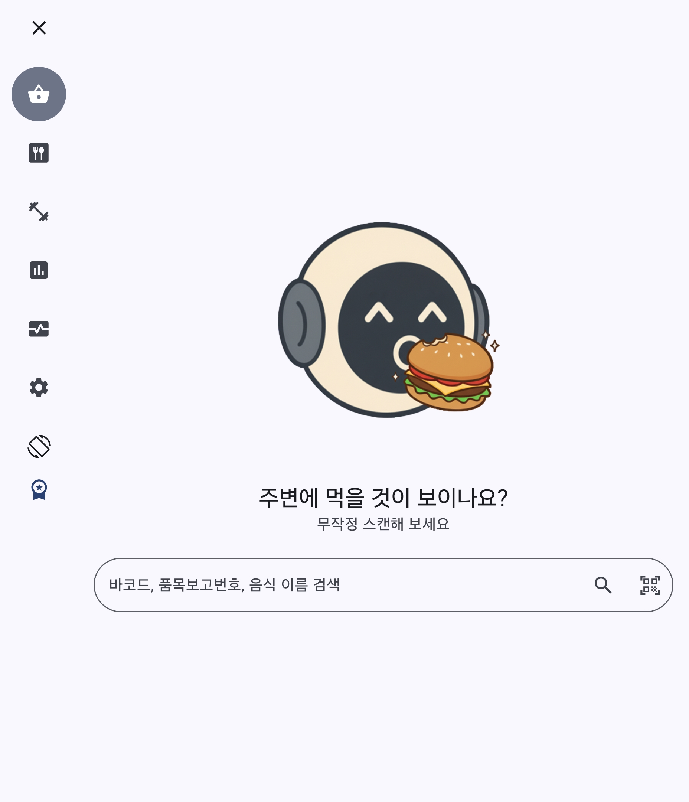
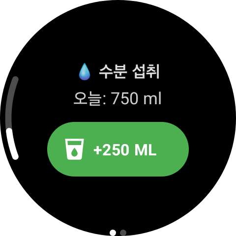

심장 박동까지 기록하는
인터벌 트레이닝.
스마트 워치와 완벽하게 연동됩니다.
HIIT 타이머, 심박수 모니터링까지.
손목 위의 AI 코치가 당신의 한계 돌파를 돕습니다.
바코드만 찍으세요.
입력은 1초면 끝.
오늘 먹은 샌드위치, 편의점 도시락.
일일이 검색하지 마세요. 바코드 스캔 한 번으로
칼로리와 영양 성분이 자동으로 기록됩니다.
오늘 하루,
AI가 분석해드립니다.
섭취한 영양소와 소모한 칼로리의 균형.
대사 건강 분석 리포트로 내 몸의 변화를
매일매일 확인하세요.